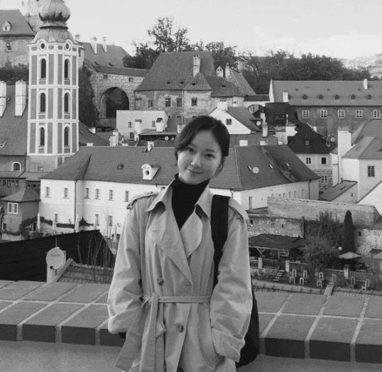

01

- PositionManager, Risk & Compliance Office, Korea SMEs and Startups Agency (KOSME)
- 소속중소벤처기업진흥공단 리스크준법실
- EducationM.S. candidate, Graduate School of Innovation & Technology Management (I&TM), KAIST
- 학력KAIST 기술경영전문대학원(I&TM) 석사과정
- FieldsTechnological innovation · Economic security · Corporate risk
- 연구분야기술혁신 · 경제안보 · 기업 위험
- Contacthmson0105@kaist.ac.kr
- 연락처hmson0105@kaist.ac.kr
- Open toJoint research · Policy analysis · Data partnerships
- 협업공동연구 · 정책분석 · 데이터 협력
Research interests
연구 관심
02
Industrial policy and supply chain analysis
산업정책과 공급망 분석
03
Early warning signals of SME distress and default prediction
중소기업 부실 조기경보와 부도 예측
Selected focus
현재 작업
Current focus
현재 초점
Economic security and supply chains, prediction of corporate distress, and the adoption of AI within organizations converge on a single question: on what evidence should an organization be assessed when technology and policy shift beneath it?
경제안보와 공급망, 기업 부실 예측, 조직 내 AI 도입은 하나의 질문으로 모인다. 기술과 정책이 발밑에서 바뀔 때 조직은 무엇을 근거로 평가되어야 하는가.
Recent work ranges from a published analysis of Japan's EV battery policy mix, through patent-landscape analysis of semiconductor etching and tactile sensing, to an early-warning indicator system for SME distress. Each is listed under Research and Projects.
최근 작업은 일본 전기차 배터리 정책조합 분석, 반도체 식각과 촉각 센싱의 특허 지형 분석, 중소기업 부실 조기경보 지표 체계에 걸쳐 있다. 각 항목은 Research 와 Projects 에 정리되어 있다.